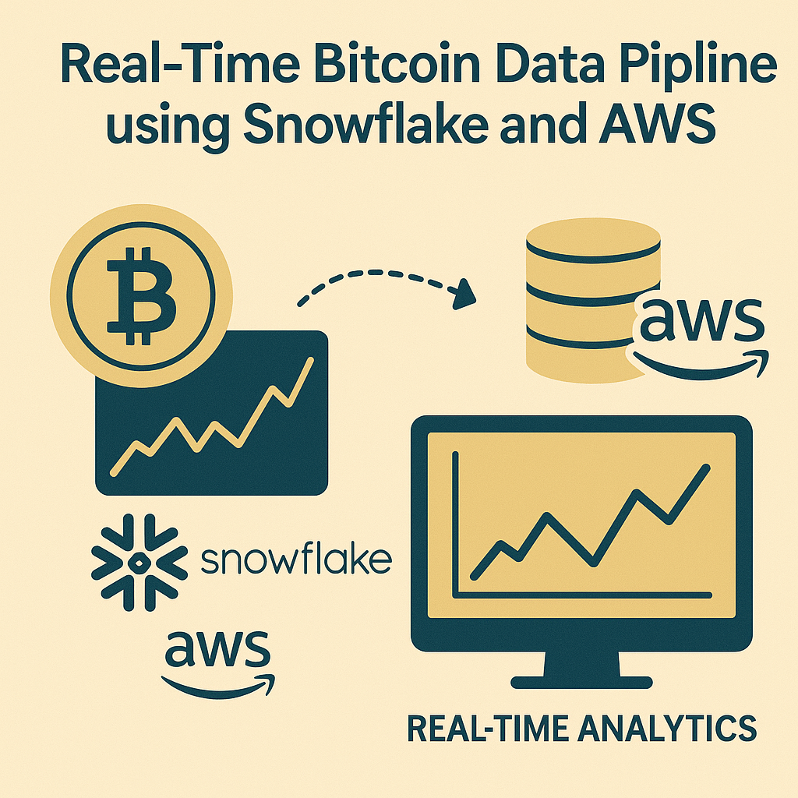
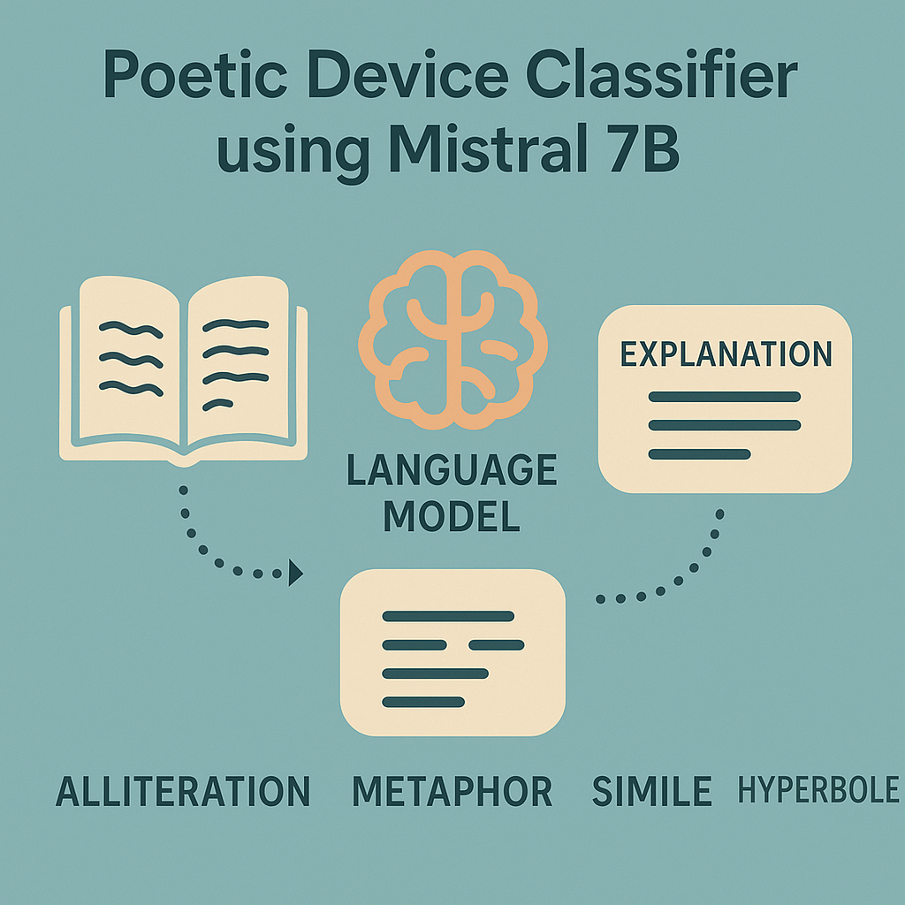
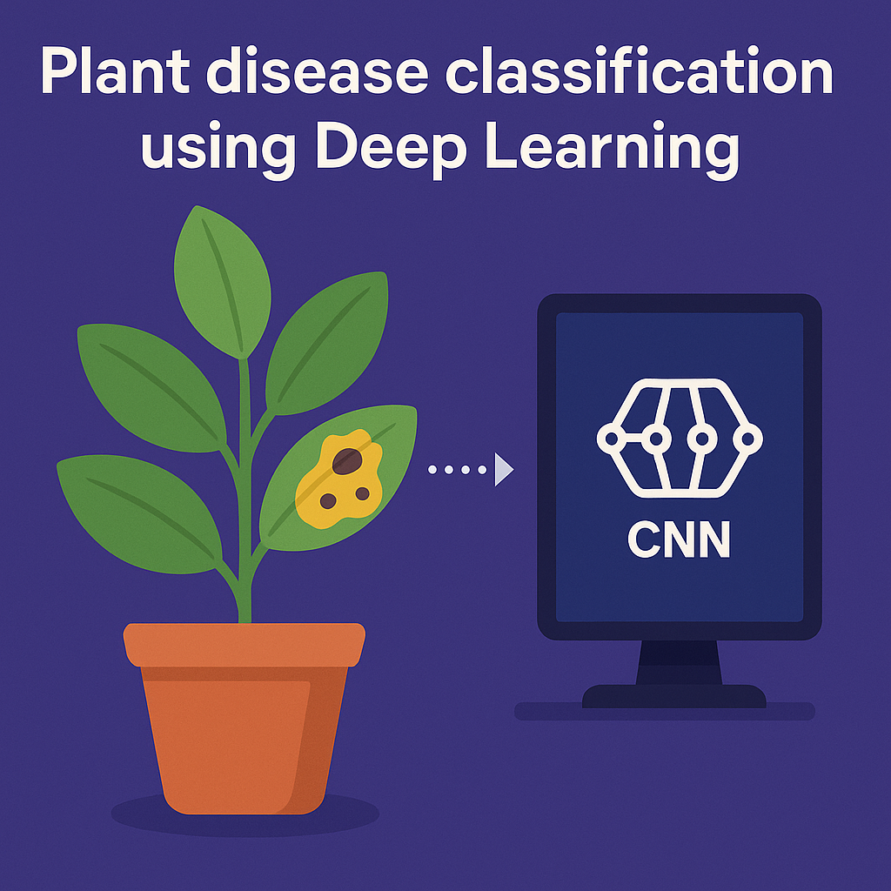
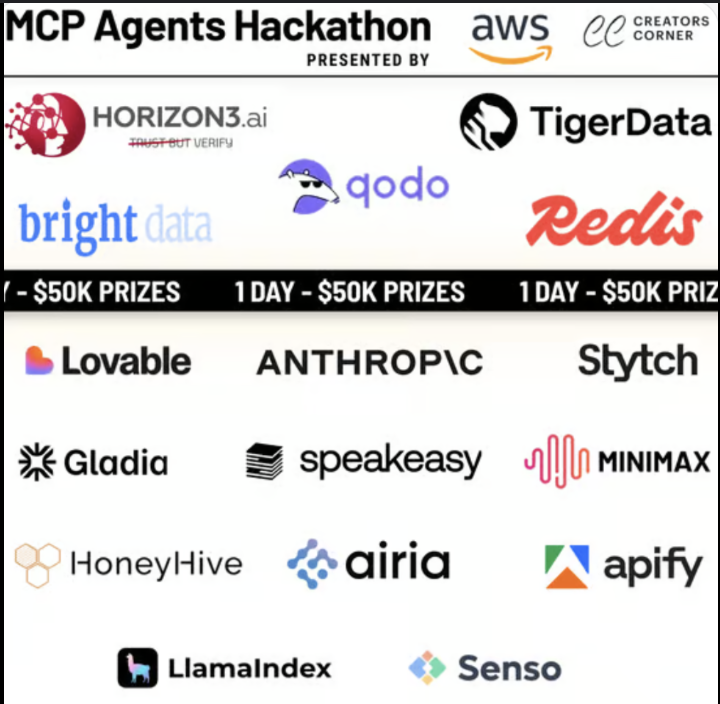
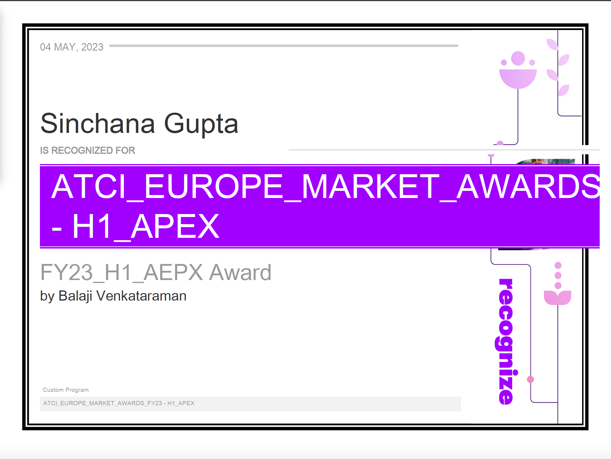
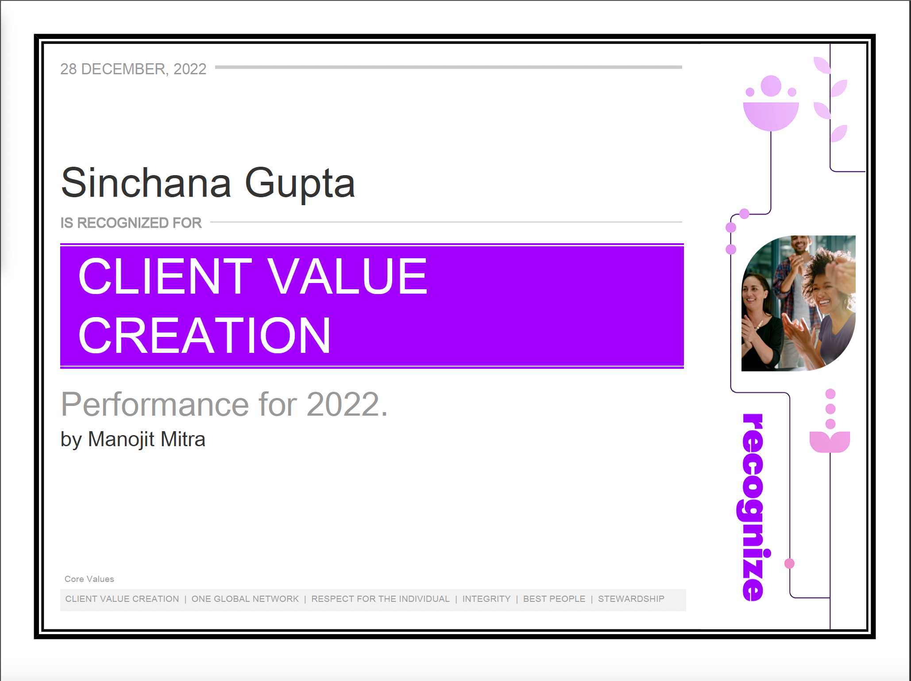

About Me

I build AI systems that work in production, not just in notebooks.
Currently at Connyct Inc., I engineer production AI workflows that automate enterprise processes. I recently built an AI-powered invoice processing system using RedisVL and LLMs that reduced manual review time by 60%, earning 3rd place in the Redis VL Innovator category at the MCP Hackathon.
Previously at Mann+Hummel, I deployed 10+ interactive dashboards that improved decision-making by 20% and automated ETL workflows that saved 15+ hours weekly. At Accenture, I analyzed failure patterns across 10,000+ vehicle registrations and improved system reliability from 60% to over 90%, saving an estimated €2M+ annually in operational costs.
I hold an MS in Data Science from University of Maryland (GPA: 3.81/4.00) and specialize in building scalable data pipelines, deploying ML models, and turning complex data into automated business decisions.
I'm actively seeking full-time Data Science and ML Engineering roles starting June 2025.
When I'm not coding, you'll find me hiking, discovering unique coffee shops, or solving sudoku puzzles. I'm learning Japanese while watching anime, with Case Closed as my favorite.
Technical Skills
Core Expertise: Machine Learning, Data Pipelines, Predictive Analytics, A/B Testing, Real-Time Systems
Programming & Data
- Python
- SQL
- R
- Pandas
- NumPy
ML & AI Frameworks
- PyTorch
- TensorFlow
- Scikit-learn
- XGBoost
- FAISS
- RedisVL
Cloud & Infrastructure
- AWS (SageMaker, S3, Lambda)
- Snowflake
- Docker
- Git
- PostgreSQL
- MongoDB
Visualization & Analytics
- Power BI
- Tableau
- Plotly
- Matplotlib
- Seaborn
Professional Background
Education
University of Maryland, College Park
August 2023 - May 2025
M.S. in Data Science
- GPA: 3.81/4.00
- Coursework: Natural Language Processing, Machine Learning, Deep Learning, Cloud Computing, Computer Vision, Big Data Systems, Statistical Methods
- Role: Graduate Teaching Assistant
PES University
August 2017 - May 2021
B.Tech in Electronics and Communication Engineering | Minor: Computer Science
- Coursework: Data Structures, Algorithms, Database Management Systems, Operating Systems
Work Experience
Connyct Inc.
August 2025 - Present
AI & Data Science Technology Engineer
- Engineered an AI-powered invoice processing system using RedisVL vector search and LLMs that automatically parses, validates, and enriches X12 invoices with 85% accuracy, reducing manual review time by 60%
- Built real-time data pipelines using Python, Redis, and AWS that process 50K+ events daily, enabling automated anomaly detection and instant alerting
- Deployed Streamlit dashboards with live monitoring that surface data quality issues in real time, cutting incident response from hours to minutes
Mann + Hummel
May 2024 - August 2024
Data Science Intern
- Designed and deployed 10+ interactive Power BI and Python dashboards that visualized real-time production KPIs, improving decision-making speed by 20%
- Automated ETL workflows using Python and SQL integrated with Snowflake, eliminating 15+ hours of manual weekly processing and increasing data accuracy by 30%
- Built predictive models using Random Forest to forecast inventory needs, reducing stockout incidents by 18%
Accenture Solutions Pvt. Ltd.
June 2021 - June 2023
Application Development Associate
- Analyzed registration failure patterns across 10,000+ VINs for Nissan EU using Python and SQL, identifying root causes that reduced job failures from 40% to under 10%, saving estimated €2M+ annually
- Built automated data validation pipelines that flagged anomalies with 95% precision, reducing manual review workload by 35%
- Created dashboards that tracked system health metrics, improving uptime from 85% to 93%
Featured Projects
Production-grade systems with measurable business impact

Real-Time Bitcoin Data Pipeline
Production-grade real-time pipeline using Python, Snowflake, AWS S3, and Snowpipe with less than 10 second latency. Architected event-driven ingestion with AWS Lambda, achieving 8-second average latency. Enabled 4x faster data availability vs traditional batch ETL.

Poetic Device Classifier Using LLMs
Fine-tuned Mistral 7B on 13,900 annotated poetry stanzas using LoRA, achieving 20% performance improvement (eval loss from 0.55 to 0.42). Integrated FAISS vector search and GPT-based explanations. Processes 1,000+ stanzas per minute with 89% F1 score.

Plant Disease Classification Using CNNs
Deep learning model that classifies potato plant diseases with 95% validation accuracy. Built using TensorFlow and Keras with transfer learning from ResNet50. Optimized for mobile deployment using TensorFlow Lite with less than 100ms inference time.
Awards & Recognition

3rd Place - Redis VL Innovator Category
September 2025
MCP AI Hackathon
Awarded for building an AI-powered invoice processing agent that automates X12 to ERP workflows using RedisVL vector search, semantic matching, and real-time anomaly detection.

Apex Award Winner
May 2023
Issued by Accenture, India
Recognition award for outstanding performance and measurable business impact. Honored for improving system reliability from 60% to 90%+ through data-driven optimization.

Client Value Creation Award
December 2022
Issued by Accenture, India
Recognized for creating significant impact on client outcomes. Awarded for identifying root causes of registration failures and reducing operational costs by an estimated €2M+ annually for Nissan EU.
Beyond Work
I recharge through hiking (recently explored Sky Meadows State Park), discovering unique coffee shops around the Bay Area, and solving sudoku puzzles. After a long hike, you'll find me at a local café trying everything from strong cold brews to creamy cappuccinos.
When I'm at home, I'm immersed in Korean dramas and anime. Case Closed is my all-time favorite for its clever mysteries. I'm learning Japanese as a beginner, and it's fun picking up words while watching. In quieter moments, I enjoy solving sudoku puzzles or getting lost in a good mystery novel. These hobbies fuel my curiosity and love for problem-solving.
Let's Connect
I'm actively seeking full-time Data Science and ML Engineering roles starting June 2025.
Whether you're looking for someone to build production ML systems, automate data pipelines, or turn complex data into business value, I'd love to talk.